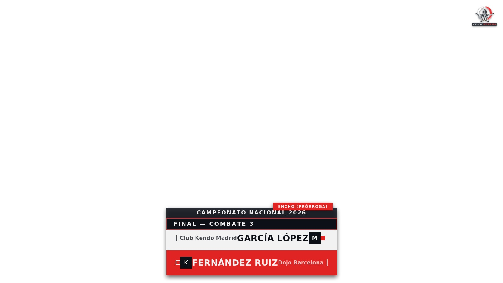
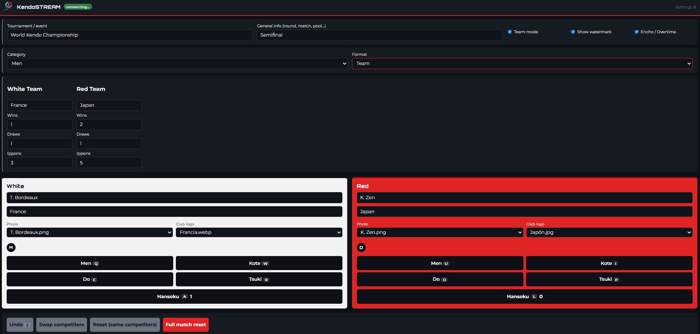
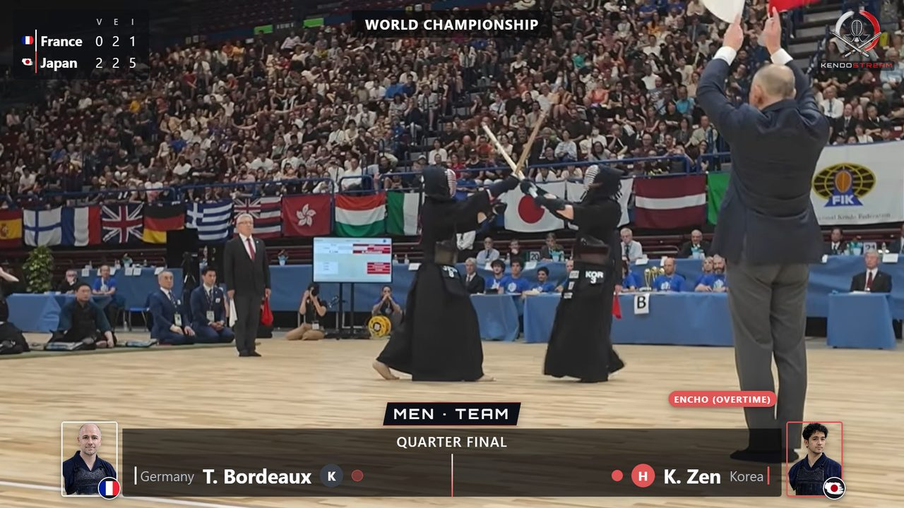
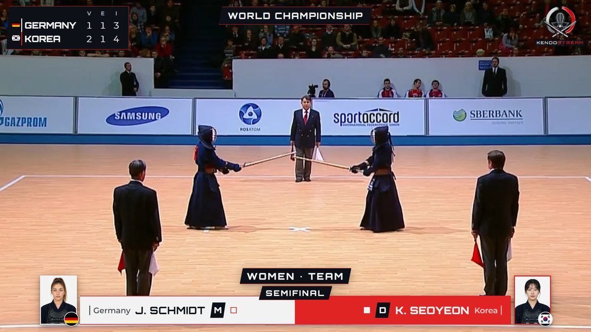
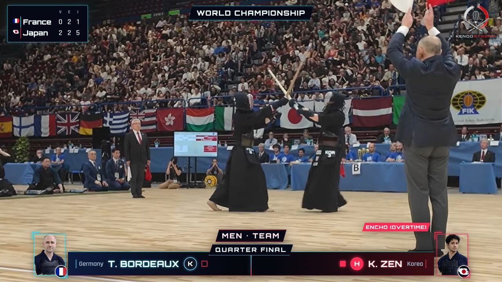
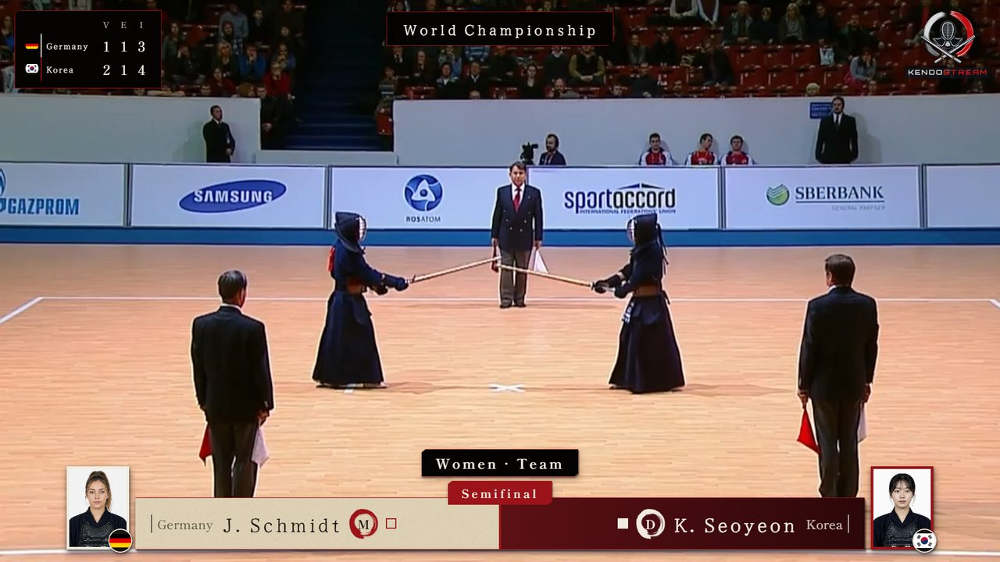

Gratuito para clubes y organizadores de kendo
Panel de control y overlay en tiempo real para OBS Studio. Puntos, hansoku, equipos y categorías — pensado por y para la comunidad del kendo, sencillo y gratuito.

Última hora
Qué es
KendoSTREAM nace para resolver un problema muy concreto: mostrar de forma clara y profesional el estado de un combate de kendo durante una retransmisión, sin que el club tenga que comprar software especializado ni contratar a nadie para operarlo.
Un operador controla el combate desde un panel sencillo — puntos, hansoku, nombres, clubes — y ese estado se refleja al instante en un overlay que se añade a OBS Studio como una fuente más. Todo funciona en red local, sin depender de internet durante la retransmisión.
Es gratuito para uso no comercial y pensado desde el primer día para que cualquier club pueda instalarlo sin conocimientos técnicos avanzados.

Características
Sin funciones de más que compliquen la instalación — solo lo que hace falta para retransmitir bien.
Men · Kote · Do · Tsuki
Puntos por técnica, hansoku (el segundo da punto al rival), encho y deshacer el último punto si los árbitros lo anulan.
Puntos · Hantei · Técnica
Al finalizar, el overlay muestra quién gana y cómo: por puntos, encho, hantei, empate o victoria técnica.
3 · 5 integrantes
Victorias, empates e ippones se suman solos, con combate de desempate en eliminatoria y tabla clara dentro del overlay.
Cuadros · Grupos
Eliminatoria directa o grupos + eliminatoria, para individuales y por equipos. Siembra, evita cruces del mismo club, guarda y carga listas, y genera el cuadro en PDF listo para imprimir.
JSON por evento
Cada combate finalizado se guarda en un archivo por evento, con copia de respaldo, para conservar el histórico de tu torneo.
Browser Source
El overlay se añade como una fuente de navegador más, con fondo transparente. Sin plugins ni pasos raros.
Categoría · Modalidad
Fotos de competidores, logo del club y categoría/modalidad, para las competiciones que lo necesitan.
ES · EN
Interfaz del operador y mensajes del overlay en español o inglés.
100% local
Todo corre en la red del pabellón. Nada de tu combate pasa por servidores de terceros.
Móvil · Tablet
Utiliza tu móvil o tablet para manejar el marcador a distancia.
Editor
Edita vídeos ya grabados para añadir el marcador de la misma forma que lo harías en directo.
Escuchando
¿Has notado un error? ¿Echas en falta alguna función? Ponte en contacto y lo solucionamos.
En acción
Un combate retransmitido con KendoSTREAM.
Personalización
Cámbialo desde la página de configuración, sin tocar ni una línea de código. Los temas de temporada, como Otoño o Halloween, se descargan aparte.

Predeterminado
Discreto y neutro.

Identidad de marca
Cortes angulados, tipografía propia y estilo más profesional.

Moderno
Estética futurista con marcos y bordes luminiscentes.

Estilo japonés
Inspirado en la caligrafía japonesa tradicional.
Necesitas Node.js y OBS Studio, los dos gratuitos. La guía cubre Windows y Mac, con solución de problemas incluida.
¿Dudas, errores, ideas o quieres usar KendoSTREAM en tu torneo? Escríbenos y te ayudamos. También si quieres colaborar.
KendoSTREAM es gratuito para cualquier uso no comercial: clubes, federaciones, competiciones, uso personal o educativo. No está permitido venderlo, modificarlo ni redistribuirlo con fines comerciales sin consentimiento del creador. Para cualquier colaboración, sugerencia o petición, escribe a kendostream@outlook.com.